Study Abroad · Summer 2026
UF in Singapore
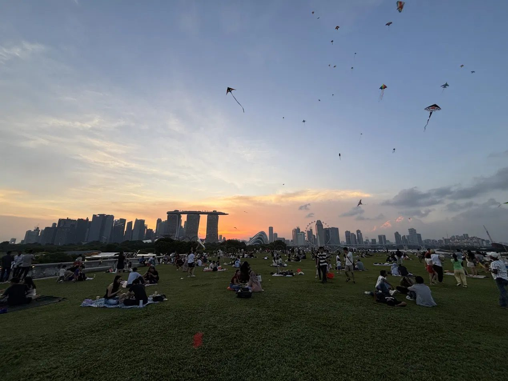
01
The Program
The UF in Singapore program paired coursework with a working internship placement, so the classroom material and the job informed each other in real time. The coursework covered career readiness, professional goal setting, and cultural adjustment. My placement was a software role at Fuzzy AI, a small B2B SaaS startup, which I worked at through the summer.
I lived in Farrer Park, right next to Little India, and got around the city on the MRT. Adjusting was easier than I expected, mostly because English is used everywhere, so the friction was practical rather than linguistic. Outside of work I ate a lot of local Indian food and spent time at hawker centers like Tekka Centre. I explored Gardens by the Bay, Chinatown, and Sentosa, went to the beach on weekends, and hiked the TreeTop Walk, where we ran into monkeys on the trail.
Professionally, the bigger adjustment was working on a globally distributed team. My coworkers were spread across India, Australia, and Singapore, so most coordination happened asynchronously over Slack and Google Meet rather than in person. I came in hoping to learn what building a real software product looks like from the inside. What I got was faster and heavier than I expected, and more useful because of it.
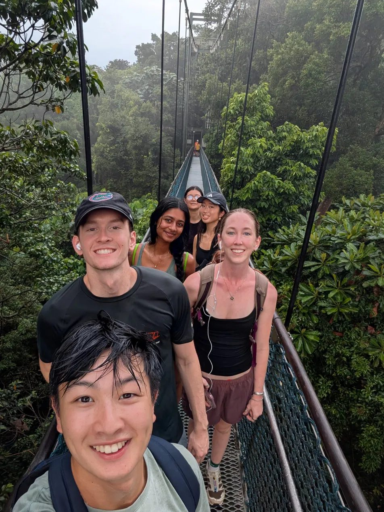
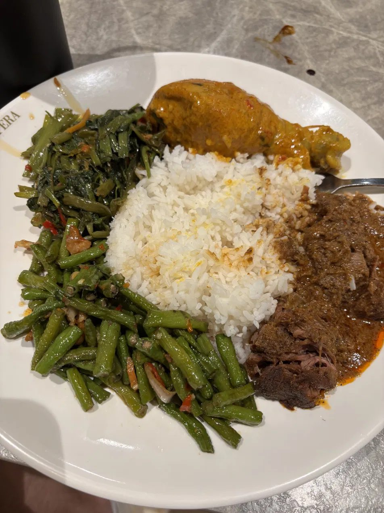
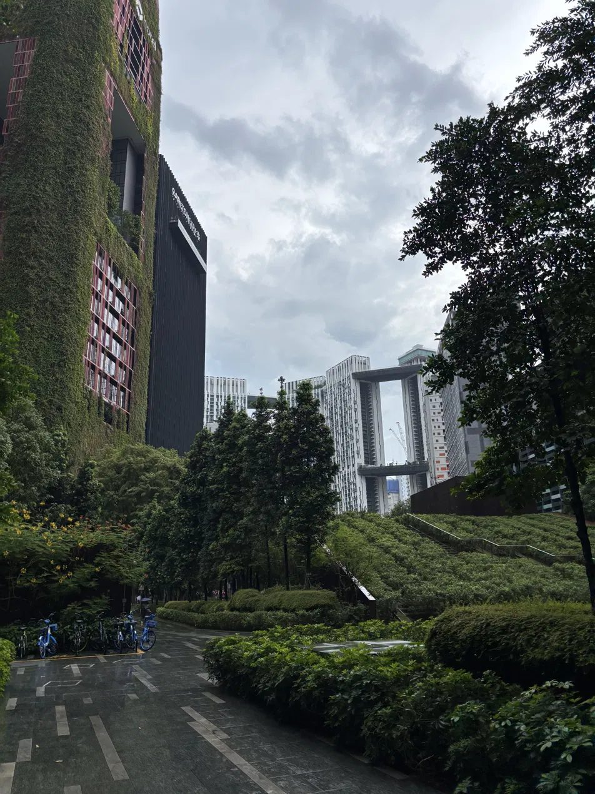
02
Cultural Storytelling Project
Cultural artifact analysis · A photo essay · Singapore and Malacca
Part one · Singapore
Hawker food culture and urban design: how a multicultural city makes everyday life shared, affordable, and green.
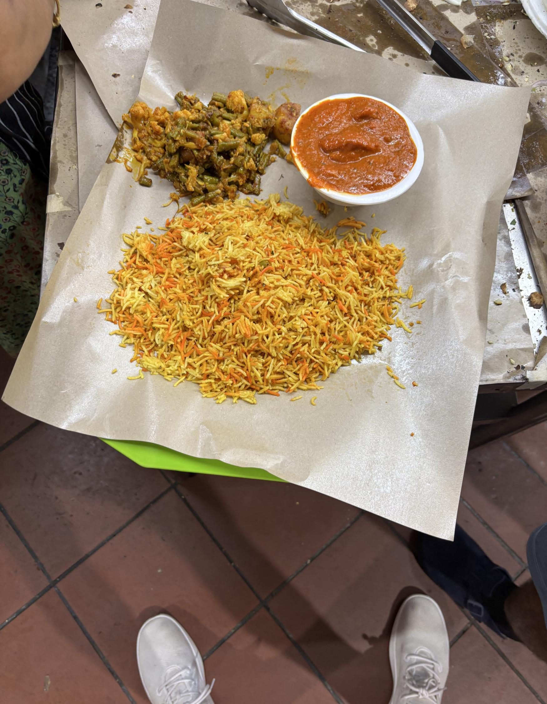
Photo 1 · Singapore
Hawker center meal
Multiculturalism · Accessibility · Shared identity
This meal from a Singapore hawker center shows how food brings together different cultural traditions in one shared space. The rice, vegetables, and curry represent influences from Chinese, Malay, and Indian cuisines.
Hawker culture reflects Singapore's multicultural society by making diverse foods affordable and accessible to everyone. Everyday meals become part of national identity.
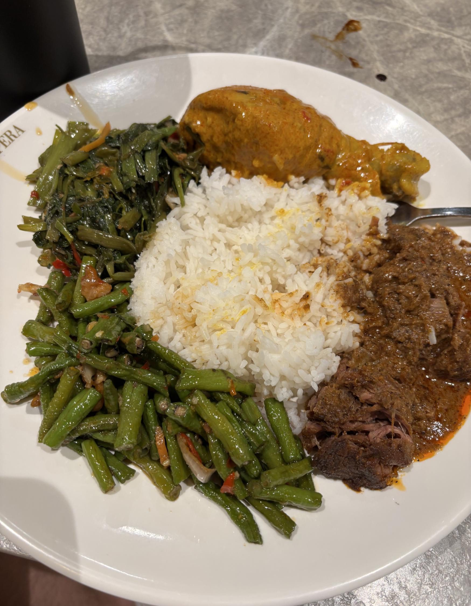
Photo 2 · Singapore
Local mixed rice dish
Multiculturalism · Diversity in daily life
This plate of mixed rice highlights the variety of dishes available in Singapore. Customers choose different meats and vegetables to create a personalized meal, reflecting the country's cultural diversity.
The combination of foods from different traditions demonstrates how multiculturalism is part of daily life rather than just a historical idea.
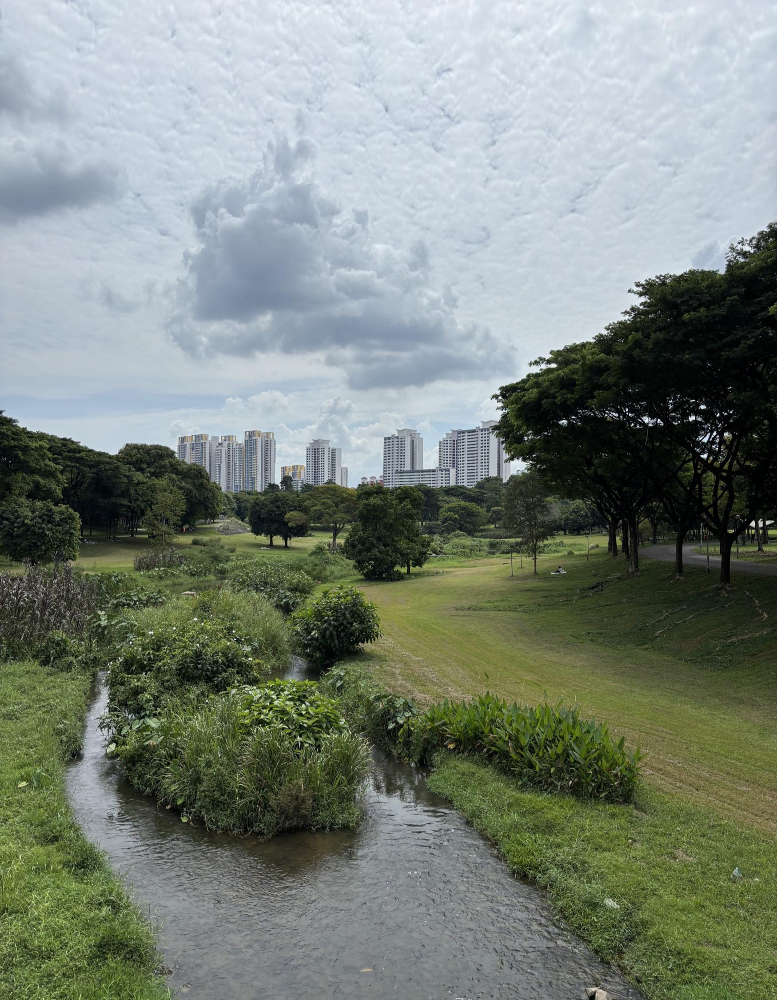
Photo 3 · Singapore
Parks and urban design
Sustainability · Planning · Quality of life
This view shows one of Singapore's large green spaces surrounded by modern apartment buildings. The city is known for combining urban development with nature, creating parks that are easy for residents to enjoy.
It reflects values of sustainability, planning, and quality of life, showing that economic growth does not have to come at the expense of the environment.
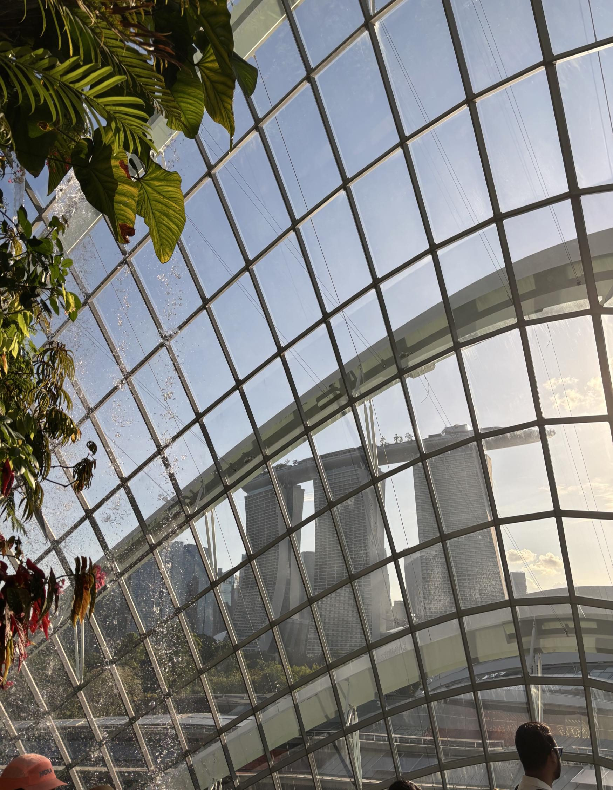
Photo 4 · Singapore
Gardens by the Bay
Innovation · Sustainability · National image
Gardens by the Bay combines advanced engineering with natural landscapes. The glass conservatory represents Singapore's focus on innovation while also promoting environmental sustainability.
The landmark has become a symbol of Singapore's modern identity, showing how technology and nature can work together instead of competing.
Part two · Malacca
Jonker Street and Peranakan heritage: a historic trading port that preserves its past while adapting to tourism and modern life.
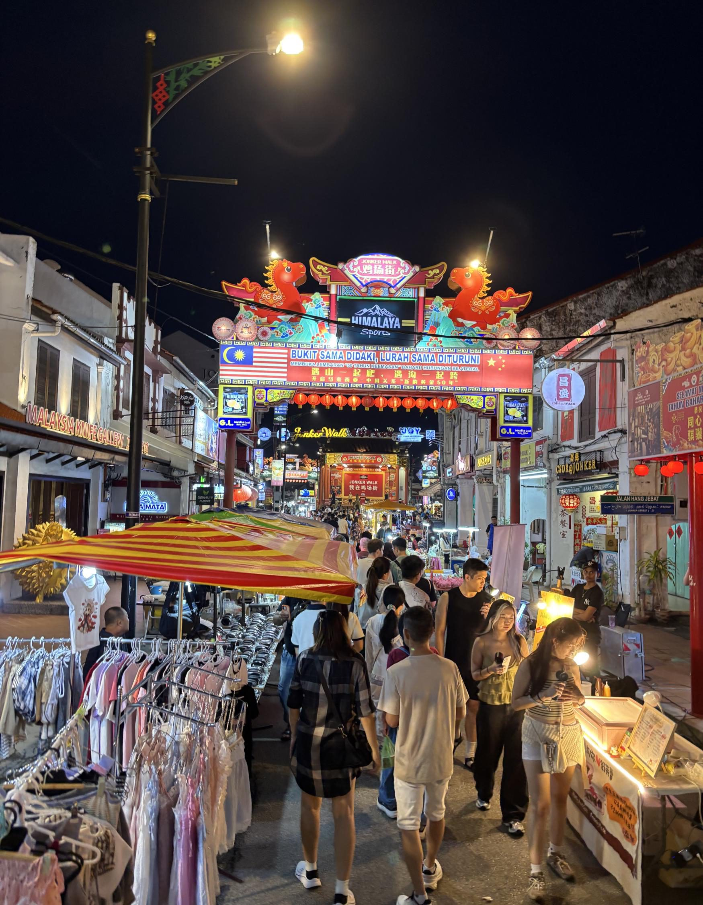
Photo 5 · Malacca
Jonker Street night market
Trade · Cultural exchange · Heritage
Jonker Street is one of the most well-known cultural areas in Malacca. The market is filled with local food vendors, shops, and entertainment that reflect the city's history as a center of trade and cultural exchange.
While tourism is important today, the street continues to preserve local traditions and cultural heritage.
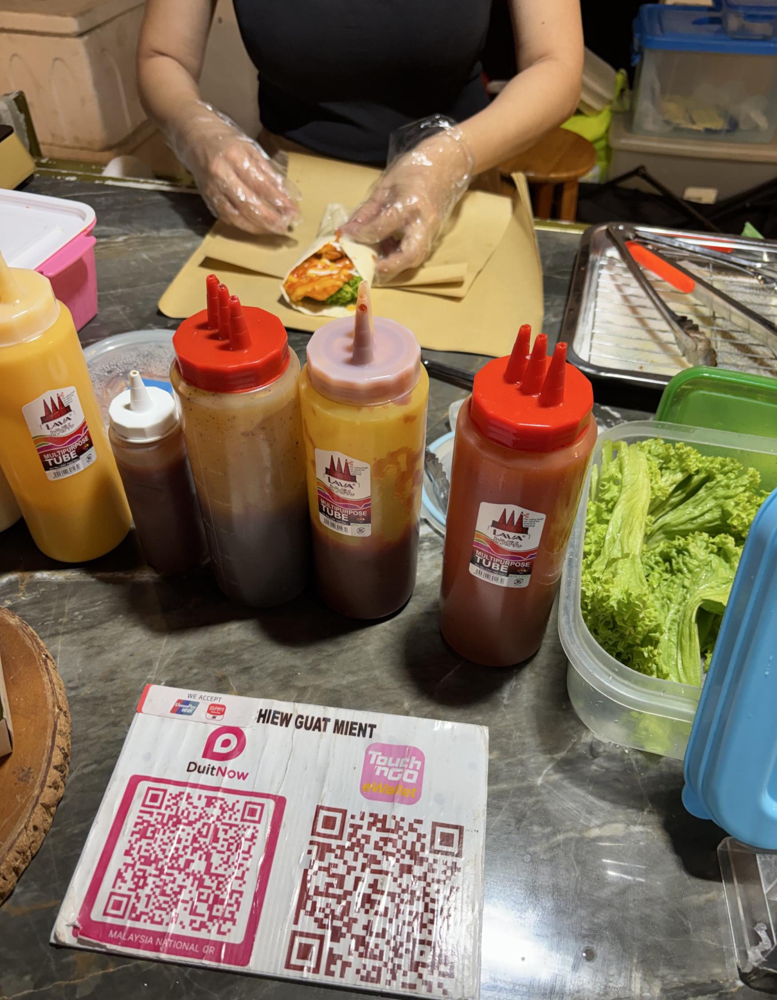
Photo 6 · Malacca
Street food vendor
Craftsmanship · Entrepreneurship · Tradition
This food stand represents the importance of local businesses and traditional street food in Malacca. Vendors prepare food in front of customers using recipes often passed down through generations.
The market reflects craftsmanship, entrepreneurship, and the role food plays in preserving cultural identity, even as QR-code payments show tradition adapting to modern life.
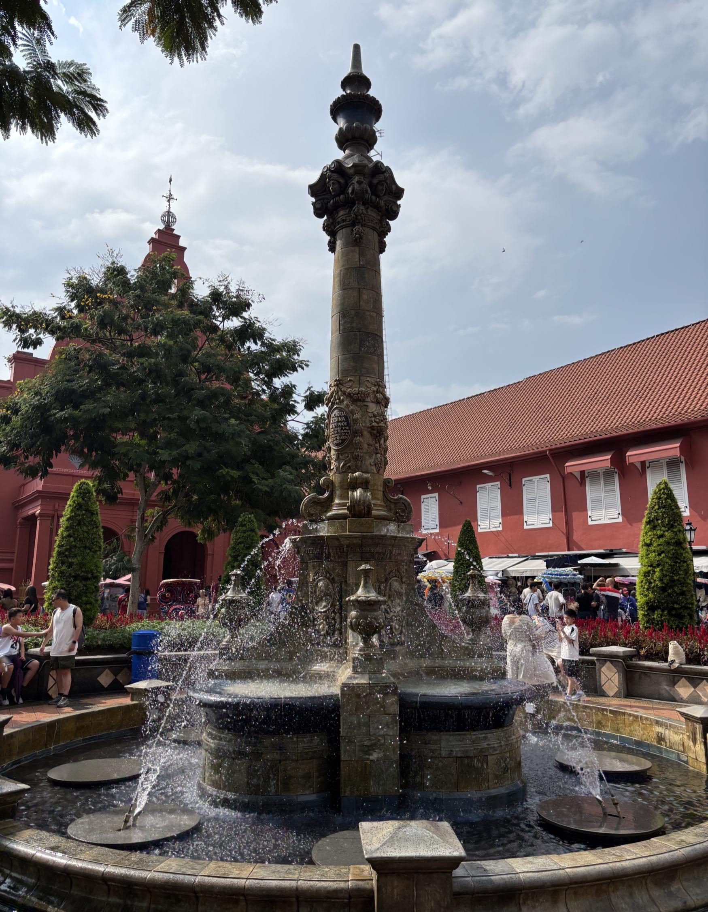
Photo 7 · Malacca
Dutch Square fountain
Colonial history · Preservation · Adaptation
The fountain at Dutch Square reflects Malacca's colonial history and the influence of European powers on the city.
Today, the area has become a public gathering place that combines historical landmarks with local businesses and tourism, showing Malacca preserving its past while adapting to modern cultural and economic life.
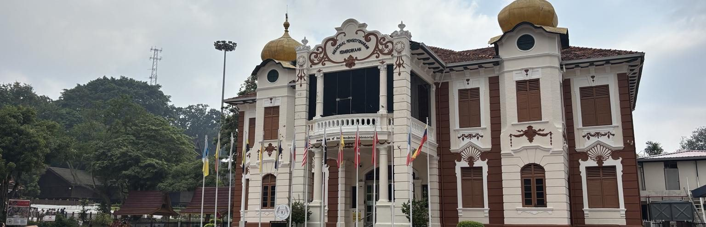
Photo 8 · Malacca
Independence Memorial Building
National identity · Memory · Shared future
The Independence Memorial reminds visitors of Malaysia's path toward independence and national identity. The building connects the country's colonial past with its present as an independent nation, reflecting the importance of remembering history while building a shared identity for future generations.
Closing reflection
Both cities value diversity, heritage, and progress.
Instead of replacing the past with modern development, Singapore and Malacca have found ways to preserve their history while adapting to the present.
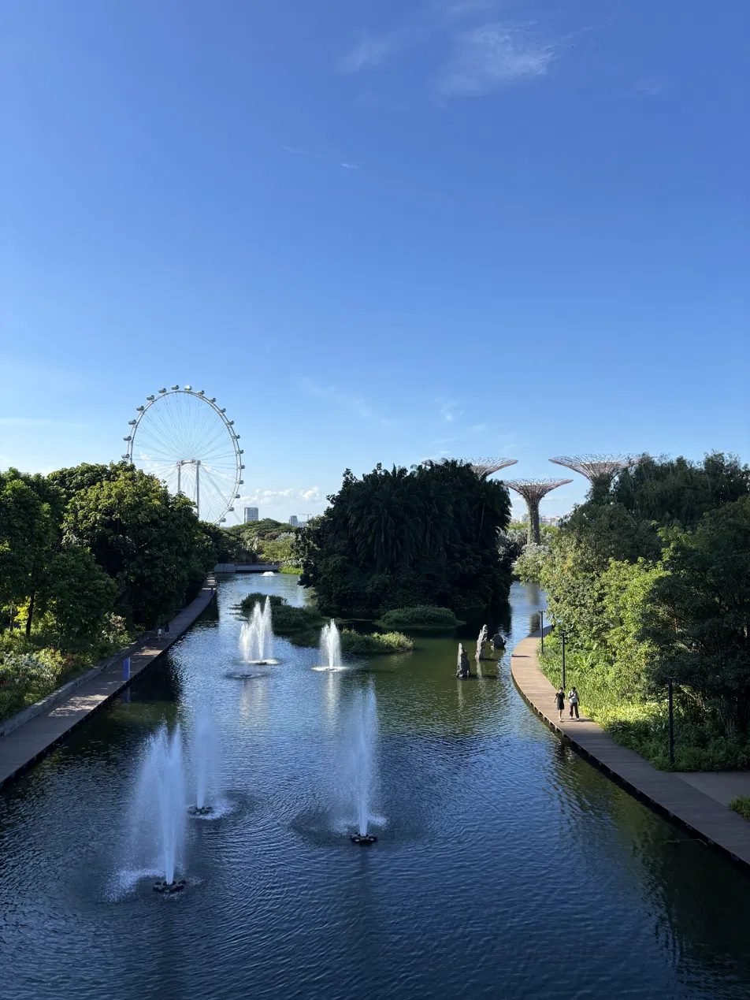
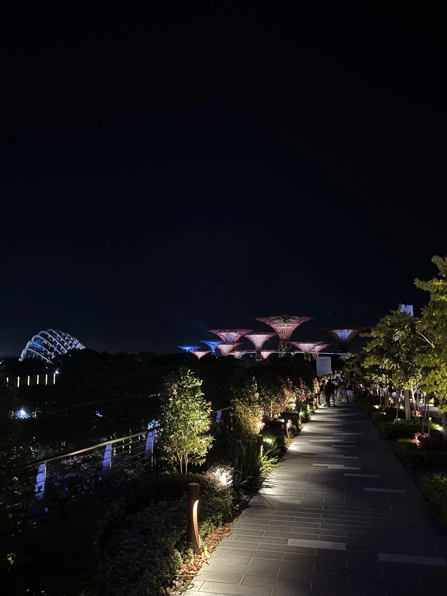
03
Reflection
What did I learn about local culture, through the planned activities and excursions and on my own?
The thing I did not expect was how little of the adjustment was linguistic. English is used everywhere, so the friction was practical: how you queue, how you pay, how the MRT organises a day. Living in Farrer Park, next to Little India, meant the version of the city I saw daily was not the postcard one. I ate a lot of local Indian food and spent time at hawker centers like Tekka Centre, where the mix of people sitting at the same tables says more about how the city works than any excursion did.
The planned side, Gardens by the Bay, Chinatown, Sentosa, and the TreeTop Walk, showed me how deliberately the country is built: green space, transport, and housing designed rather than accumulated. What corrected my first impression was realising that the order I was reading as sterile is what makes a city this dense livable for the people in it.
What did I find challenging about studying and working abroad?
The first was the distributed team. My coworkers were spread across India, Australia, and Singapore, so most coordination happened asynchronously over Slack and Google Meet. An incomplete message cost a full day of waiting for the answer, which forced me to write with more care than I ever had to in a classroom: say what I tried, what I expected, and what I need, in one message.
The second was pace. I came in hoping to learn what building a real software product looks like from the inside, and what I got was faster and heavier than I expected. On a team of seven there was no ramp: I was reading a codebase I did not write and shipping into it. The Product Hunt launch was the sharpest version of that, a single day with a hard deadline, my work public and able to be wrong in front of people.
What lessons did I take from the experience?
The one that changed the most was this: working code doesn't matter much if it isn't solving the right problem. Talking to potential customers directly taught me that, and it changed how I evaluated my own work for the rest of the internship.
The second is that not knowing is a normal state. When an attendee at our user workshop hit an issue I had never seen, I diagnosed it live and got back to him before the session ended. The useful skill was not having the answer, it was being fast and honest about closing the gap.
The third is about myself. I went in expecting to move toward product and growth work with technical fluency as support. The internship reversed that. Engineering turned out to be the part I want to be doing, and the product and customer instincts are what make the engineering better rather than the destination.
How will I use this intercultural experience back at UF and in my career?
At UF, the immediate change is how I work with other people. On group projects I write the way I learned to write for a team eleven time zones wide: complete messages, stated assumptions, no waiting to be assigned things. I also stopped treating silence as agreement, which matters as much in a project team as it did on a workshop floor.
Professionally, I want to keep working on distributed teams and stay close to the people using what I build. Both of the things I am best at now came from that combination, and I would take another role abroad without hesitating.